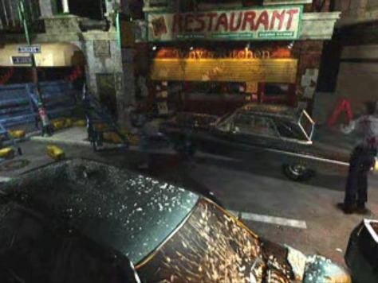

Places To Eat
Emmy’s Diner
A local favorite since the early 1990s, Emmy’s Diner is known for its nostalgic atmosphere, chrome counters, and hearty comfort food that has kept Raccoon City residents coming back for decades. Emmy herself is a longtime Raccoon City native, and her diner is one of the few places that still feels like home in the midst of the city’s eerie quiet.
The menu features classics like the Umbrella Burger, a double patty topped with spicy crimson sauce, alongside homemade fries, milkshakes, and breakfast platters served all day. Locals recommend the Midnight Melt, a grilled sandwich that pairs perfectly with Emmy’s signature coffee blend. It’s the perfect stop before heading out on a night patrol or escaping the occasional zombie sighting.
Grill 13
Located near the Raccoon City Police Department, Grill 13 is a stylish urban eatery offering grilled meats and craft cocktails. The restaurant takes inspiration from the city’s industrial architecture, dark wood, exposed brick, and flickering candlelight make it a cozy yet modern experience.
The menu highlights include the Tyrant T-Bone<, Grilled Nemesis Wings, and a vegetarian option called theHerb Blend Salad. Redstone Grill is a great place for visitors looking for a refined taste of Raccoon City without sacrificing atmosphere or safety.

Tony's Kitchen
For those seeking something more upscale, Tony's Kitchen offers fine dining atop the refurbished Spencer Tower. The panoramic view of the city skyline, especially at dusk, makes this a must-visit destination for couples and tourists alike.
The chef’s menu changes weekly, featuring elegant dishes like Crimson Salmon, Herb-Crusted Filet, and Moonlit Tiramisu. The cocktail bar is also well-known for its signature drink, the G-Virus Glow, a luminescent blue martini that’s almost too pretty to drink.